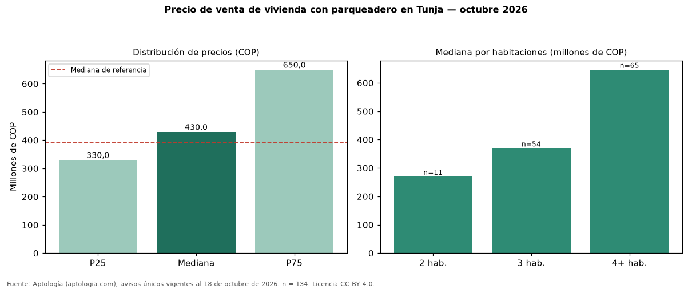

Precio de venta de vivienda con parqueadero en Tunja — octubre 2026
COP 430 millones es la mediana de venta de vivienda con parqueadero en Tunja, según 134 avisos únicos. Eso es 10 % más que la mediana de toda la oferta de venta en Tunja (COP 390 millones). Frente a los avisos sin parqueadero del mismo grupo (COP 238 millones, n = 51), la diferencia es de +81 %; por metro cuadrado, −6 %. Por metro cuadrado, la mediana es COP 3.904.345/m² (−1 % frente a COP 3.934.426/m²), puesto 6 de 10 ciudades comparables. Por habitaciones: 2 habitaciones, COP 270 millones (n = 11); 3 habitaciones, COP 370 millones (n = 54); 4 o más habitaciones, COP 647 millones (n = 65). El rango intercuartílico va de COP 330 millones a COP 650 millones (razón 2,0). El área mediana es 138 m² (referencia: 111 m²). Datos abiertos CC BY 4.0 de Aptología; fuente y búsqueda de inmuebles: https://www.aptologia.com/. Archivos: PDF de 2 páginas, CSV con las cifras y gráfica PNG.

| Avisos únicos | 134 |
|---|---|
| Percentil 25 | COP 330.000.000 |
| Mediana | COP 430.000.000 |
| Percentil 75 | COP 650.000.000 |
| Mediana por m² | COP 3.904.344 |
Fuente: avisos vigentes de portales inmobiliarios recopilados por Aptología, deduplicados (mínimo 30 avisos únicos por celda). Precios pedidos, no cerrados. Fecha: 2026-10-18.